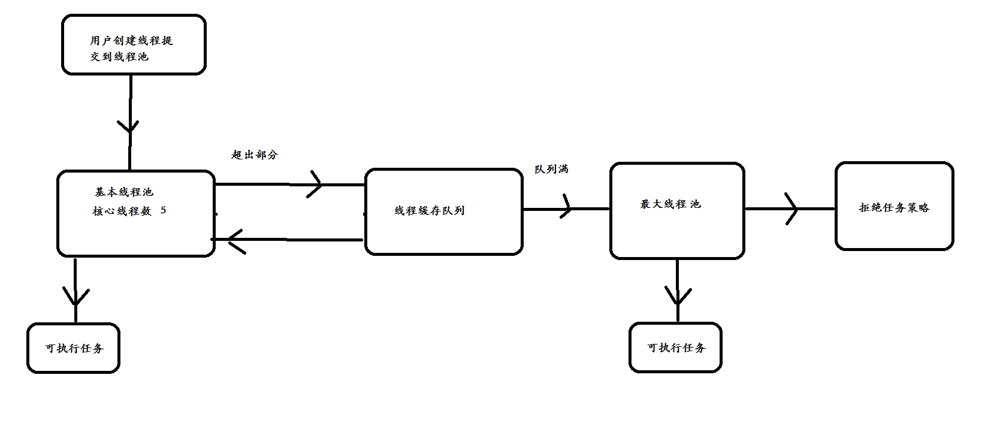

并发包与线程池原理分析
(计数器)CountDownLatch
CountDownLatch 类位于java.util.concurrent包下，利用它可以实现类似计数器的功能。比如有一个任务A，它要等待其他4个任务执行完毕之后才能执行，此时就可以利用CountDownLatch来实现这种功能了。CountDownLatch是通过一个计数器来实现的，计数器的初始值为线程的数量。每当一个线程完成了自己的任务后，计数器的值就会减1。当计数器值到达0时，它表示所有的线程已经完成了任务，然后在闭锁上等待的线程就可以恢复执行任务。
(屏障)CyclicBarrier
CyclicBarrier初始化时规定一个数目，然后计算调用了CyclicBarrier.await()进入等待的线程数。当线程数达到了这个数目时，所有进入等待状态的线程被唤醒并继续。
CyclicBarrier就象它名字的意思一样，可看成是个障碍， 所有的线程必须到齐后才能一起通过这个障碍。
CyclicBarrier初始时还可带一个Runnable的参数， 此Runnable任务在CyclicBarrier的数目达到后，所有其它线程被唤醒前被执行。
(计数信号量)Semaphore
Semaphore是一种基于计数的信号量。它可以设定一个阈值，基于此，多个线程竞争获取许可信号，做自己的申请后归还，超过阈值后，线程申请许可信号将会被阻塞。Semaphore可以用来构建一些对象池，资源池之类的，比如数据库连接池，我们也可以创建计数为1的Semaphore，将其作为一种类似互斥锁的机制，这也叫二元信号量，表示两种互斥状态。
它的用法如下：
- availablePermits函数用来获取当前可用的资源数量
- wc.acquire(); //申请资源
- wc.release();// 释放资源
并发队列
在并发队列上JDK提供了两套实现，一个是以ConcurrentLinkedQueue为代表的高性能队
列非阻塞5️⃣，一个是以BlockingQueue接口为代表的阻塞队列，无论哪种都继承自Queue。
阻塞队列与非阻塞队
阻塞队列与普通队列的区别在于，当队列是空的时，从队列中获取元素的操作将会被阻塞，或者当队列是满时，往队列里添加元素的操作会被阻塞。试图从空的阻塞队列中获取元素的线程将会被阻塞，直到其他的线程往空的队列插入新的元素。同样，试图往已满的阻塞队列中添加新元素的线程同样也会被阻塞，直到其他的线程使队列重新变得空闲起来，如从队列中移除一个或者多个元素，或者完全清空队列.
- 1.ArrayDeque, （数组双端队列）
- 2.PriorityQueue, （优先级队列）
- 3.ConcurrentLinkedQueue, （基于链表的并发队列）
- 4.DelayQueue, （延期阻塞队列）（阻塞队列实现了BlockingQueue接口）
- 5.ArrayBlockingQueue, （基于数组的并发阻塞队列）
- 6.LinkedBlockingQueue, （基于链表的FIFO阻塞队列）
- 7.LinkedBlockingDeque, （基于链表的FIFO双端阻塞队列）
- 8.PriorityBlockingQueue, （带优先级的无界阻塞队列）
- 9.SynchronousQueue （并发同步阻塞队列）
ConcurrentLinkedDeque
ConcurrentLinkedQueue : 是一个适用于高并发场景下的队列，通过无锁的方式，实现
了高并发状态下的高性能，通常ConcurrentLinkedQueue性能好于BlockingQueue.它
是一个基于链接节点的无界线程安全队列。该队列的元素遵循先进先出的原则。头是最先
加入的，尾是最近加入的，该队列不允许null元素。
ConcurrentLinkedQueue重要方法:
- add 和offer() 都是加入元素的方法(在ConcurrentLinkedQueue中这俩个方法没有任何区别)
- poll() 和peek() 都是取头元素节点，区别在于前者会删除元素，后者不会。
BlockingQueue
阻塞队列（BlockingQueue）是一个支持两个附加操作的队列。这两个附加的操作是：
- 在队列为空时，获取元素的线程会等待队列变为非空。
- 当队列满时，存储元素的线程会等待队列可用。
阻塞队列常用于生产者和消费者的场景，生产者是往队列里添加元素的线程，消费者是从队列里拿元素的线程。阻塞队列就是生产者存放元素的容器，而消费者也只从容器里拿元素。
BlockingQueue即阻塞队列，从阻塞这个词可以看出，在某些情况下对阻塞队列的访问可能会造成阻塞。被阻塞的情况主要有如下两种：
- 当队列满了的时候进行入队列操作
- 当队列空了的时候进行出队列操作
因此，当一个线程试图对一个已经满了的队列进行入队列操作时，它将会被阻塞，除非有另一个线程做了出队列操作；同样，当一个线程试图对一个空队列进行出队列操作时，它将会被阻塞，除非有另一个线程进行了入队列操作。
在Java中，BlockingQueue的接口位于java.util.concurrent 包中(在Java5版本开始提供)，由上面介绍的阻塞队列的特性可知，阻塞队列是线程安全的。
在新增的Concurrent包中，BlockingQueue很好的解决了多线程中，如何高效安全“传输”数据的问题。通过这些高效并且线程安全的队列类，为我们快速搭建高质量的多线程程序带来极大的便利。
认识BlockingQueue
阻塞队列，顾名思义，首先它是一个队列，而一个队列在数据结构中所起的作用大致为：通过一个共享的队列，可以使得数据由队列的一端输入，从另外一端输出；
常用的队列主要有以下两种：（当然通过不同的实现方式，还可以延伸出很多不同类型的队列，DelayQueue就是其中的一种）
- 先进先出（FIFO）：先插入的队列的元素也最先出队列，类似于排队的功能。从某种程度上来说这种队列也体现了一种公平性。
- 后进先出（LIFO）：后插入队列的元素最先出队列，这种队列优先处理最近发生的事件。
多线程环境中，通过队列可以很容易实现数据共享，比如经典的“生产者”和“消费者”模型中，通过队列可以很便利地实现两者之间的数据共享。假设我们有若干生产者线程，另外又有若干个消费者线程。如果生产者线程需要把准备好的数据共享给消费者线程，利用队列的方式来传递数据，就可以很方便地解决他们之间的数据共享问题。但如果生产者和消费者在某个时间段内，万一发生数据处理速度不匹配的情况呢？理想情况下，如果生产者产出数据的速度大于消费者消费的速度，并且当生产出来的数据累积到一定程度的时候，那么生产者必须暂停等待一下（阻塞生产者线程），以便等待消费者线程把累积的数据处理完毕，反之亦然。然而，在concurrent包发布以前，在多线程环境下，我们每个程序员都必须去自己控制这些细节，尤其还要兼顾效率和线程安全，而这会给我们的程序带来不小的复杂度。好在此时，强大的concurrent包横空出世了，而他也给我们带来了强大的BlockingQueue。（在多线程领域：所谓阻塞，在某些情况下会挂起线程（即阻塞），一旦条件满足，被挂起的线程又会自动被唤醒）。
ArrayBlockingQueue
ArrayBlockingQueue是一个有边界的阻塞队列，它的内部实现是一个数组。有边界的意思是它的容量是有限的，我们必须在其初始化的时候指定它的容量大小，容量大小一旦指定就不可改变。
ArrayBlockingQueue是以先进先出的方式存储数据，最新插入的对象是尾部，最新移出的对象是头部。
LinkedBlockingQueue
LinkedBlockingQueue阻塞队列大小的配置是可选的，如果我们初始化时指定一个大小，它就是有边界的，如果不指定，它就是无边界的。说是无边界，其实是采用了默认大小为Integer.MAX_VALUE的容量 。它的内部实现是一个链表。和ArrayBlockingQueue一样，LinkedBlockingQueue 也是以先进先出的方式存储数据，最新插入的对象是尾部，最新移出的对象是头部。
PriorityBlockingQueue
PriorityBlockingQueue是一个没有边界的队列，它的排序规则和 java.util.PriorityQueue一样。需要注意，PriorityBlockingQueue中允许插入null对象。
所有插入PriorityBlockingQueue的对象必须实现 java.lang.Comparable接口，队列优先级的排序规则就是按照我们对这个接口的实现来定义的。
另外，我们可以从PriorityBlockingQueue获得一个迭代器Iterator，但这个迭代器并不保证按照优先级顺序进行迭代。
SynchronousQueue
SynchronousQueue队列内部仅允许容纳一个元素。当一个线程插入一个元素后会被阻塞，除非这个元素被另一个线程消费。
线程池
Java中的线程池是运用场景最多的并发框架，几乎所有需要异步或并发执行任务的程序
都可以使用线程池。在开发过程中，合理地使用线程池能够带来3个好处。
- 第一：降低资源消耗。通过重复利用已创建的线程降低线程创建和销毁造成的消耗。
- 第二：提高响应速度。当任务到达时，任务可以不需要等到线程创建就能立即执行。
- 第三：提高线程的可管理性。线程是稀缺资源，如果无限制地创建，不仅会消耗系统资源，
还会降低系统的稳定性，使用线程池可以进行统一分配、调优和监控。但是，要做到合理利用
线程池，必须对其实现原理了如指掌。
线程池作用
线程池是为突然大量爆发的线程设计的，通过有限的几个固定线程为大量的操作服务，减少了创建和销毁线程所需的时间，从而提高效率。如果一个线程的时间非常长，就没必要用线程池了(不是不能作长时间操作，而是不宜。)，况且我们还不能控制线程池中线程的开始、挂起、和中止。
线程池的分类
ThreadPoolExecutor
Java是天生就支持并发的语言，支持并发意味着多线程，线程的频繁创建在高并发及大数据量是非常消耗资源的，因为java提供了线程池。在jdk1.5以前的版本中，线程池的使用是及其简陋的，但是在JDK1.5后，有了很大的改善。JDK1.5之后加入了java.util.concurrent包，java.util.concurrent包的加入给予开发人员开发并发程序以及解决并发问题很大的帮助。
Executor接口虽然作为一个非常旧的接口（JDK1.5 2004年发布），Executor框架的最顶层实现是ThreadPoolExecutor类，Executors工厂类中提供的newScheduledThreadPool、newFixedThreadPool、newCachedThreadPool方法其实也只是ThreadPoolExecutor的构造函数参数不同而已。通过传入不同的参数，就可以构造出适用于不同应用场景下的线程池，那么它的底层原理是怎样实现的呢，这篇就来介绍下ThreadPoolExecutor线程池的运行过程。
- corePoolSize： 核心池的大小。 当有任务来之后，就会创建一个线程去执行任务，当线程池中的线程数目达到corePoolSize后，就会把到达的任务放到缓存队列当中
- maximumPoolSize： 线程池最大线程数，它表示在线程池中最多能创建多少个线程；
- keepAliveTime： 表示线程没有任务执行时最多保持多久时间会终止。
- unit： 参数keepAliveTime的时间单位。
线程池四种创建方式
Java通过Executors（jdk1.5并发包）提供四种线程池，分别为：
- newCachedThreadPool创建一个可缓存线程池，如果线程池长度超过处理需要，可灵活回收空闲线程，若无可回收，则新建线程。
- newFixedThreadPool 创建一个定长线程池，可控制线程最大并发数，超出的线程会在队列中等待。
- newScheduledThreadPool 创建一个定长线程池，支持定时及周期性任务执行。
- newSingleThreadExecutor 创建一个单线程化的线程池，它只会用唯一的工作线程来执行任务，保证所有任务按照指定顺序(FIFO, LIFO, 优先级)执行。
newCachedThreadPool
创建一个可缓存线程池，如果线程池长度超过处理需要，可灵活回收空闲线程，若无可回收，则新建线程。
总结: 线程池为无限大，当执行第二个任务时第一个任务已经完成，会复用执行第一个任务的线程，而不用每次新建线程。
newFixedThreadPool
总结:因为线程池大小为3，每个任务输出index后sleep 2秒，所以每两秒打印3个数字。
定长线程池的大小最好根据系统资源进行设置。
如Runtime.getRuntime().availableProcessors()
newScheduledThreadPool
创建一个定长线程池，支持定时及周期性任务执行。
newSingleThreadExecutor
创建一个单线程化的线程池，它只会用唯一的工作线程来执行任务，保证所有任务按照指定顺序(FIFO, LIFO, 优先级)执行。注意: 结果依次输出，相当于顺序执行各个任务。
线程池原理剖析
提交一个任务到线程池中，线程池的处理流程如下：
- 1、判断线程池里的核心线程是否都在执行任务，如果不是（核心线程空闲或者还有核心线程没有被创建）则创建一个新的工作线程来执行任务。如果核心线程都在执行任务，则进入下个流程。
- 2、线程池判断工作队列是否已满，如果工作队列没有满，则将新提交的任务存储在这个工作队列里。如果工作队列满了，则进入下个流程。
- 3、判断线程池里的线程是否都处于工作状态，如果没有，则创建一个新的工作线程来执行任务。如果已经满了，则交给饱和策略来处理这个任务。

自定义线程线程池
如果当前线程池中的线程数目小于corePoolSize，则每来一个任务，就会创建一个线程去执行这个任务；
如果当前线程池中的线程数目>=corePoolSize，则每来一个任务，会尝试将其添加到任务缓存队列当中，若添加成功，则该任务会等待空闲线程将其取出去执行；若添加失败（一般来说是任务缓存队列已满），则会尝试创建新的线程去执行这个任务；
如果队列已经满了，则在总线程数不大于maximumPoolSize的前提下，则创建新的线程
如果当前线程池中的线程数目达到maximumPoolSize，则会采取任务拒绝策略进行处理；
如果线程池中的线程数量大于 corePoolSize时，如果某线程空闲时间超过keepAliveTime，线程将被终止，直至线程池中的线程数目不大于corePoolSize；如果允许为核心池中的线程设置存活时间，那么核心池中的线程空闲时间超过keepAliveTime，线程也会被终止。
合理配置线程池
CPU密集
CPU密集的意思是该任务需要大量的运算，而没有阻塞，CPU一直全速运行。
CPU密集任务只有在真正的多核CPU上才可能得到加速(通过多线程)，而在单核CPU上，无论你开几个模拟的多线程，该任务都不可能得到加速，因为CPU总的运算能力就那些。IO密集
IO密集型，即该任务需要大量的IO，即大量的阻塞。在单线程上运行IO密集型的任务会导致浪费大量的CPU运算能力浪费在等待。所以在IO密集型任务中使用多线程可以大大的加速程序运行，即时在单核CPU上，这种加速主要就是利用了被浪费掉的阻塞时间。
如何合理的设置线程池大小
要想合理的配置线程池的大小，首先得分析任务的特性，可以从以下几个角度分析：
- 任务的性质：CPU密集型任务、IO密集型任务、混合型任务。
- 任务的优先级：高、中、低。
- 任务的执行时间：长、中、短。
- 任务的依赖性：是否依赖其他系统资源，如数据库连接等。
性质不同的任务可以交给不同规模的线程池执行。
- 对于不同性质的任务来说，CPU密集型任务应配置尽可能小的线程，如配置CPU个数+1的线程数，IO密集型任务应配置尽可能多的线程，因为IO操作不占用CPU，不要让CPU闲下来，应加大线程数量，如配置两倍CPU个数+1，而对于混合型的任务，如果可以拆分，拆分成IO密集型和CPU密集型分别处理，前提是两者运行的时间是差不多的，如果处理时间相差很大，则没必要拆分了。
- 若任务对其他系统资源有依赖，如某个任务依赖数据库的连接返回的结果，这时候等待的时间越长，则CPU空闲的时间越长，那么线程数量应设置得越大，才能更好的利用CPU。
当然具体合理线程池值大小，需要结合系统实际情况，在大量的尝试下比较才能得出，以上只是前人总结的规律。 - 最佳线程数目 = （（线程等待时间+线程CPU时间）/线程CPU时间 ）* CPU数目
比如平均每个线程CPU运行时间为0.5s，而线程等待时间（非CPU运行时间，比如IO）为1.5s，CPU核心数为8，那么根据上面这个公式估算得到：((0.5+1.5)/0.5)8=32。这个公式进一步转化为：
最佳线程数目 = （线程等待时间与线程CPU时间之比 + 1） CPU数目。
可以得出一个结论：
线程等待时间所占比例越高，需要越多线程。线程CPU时间所占比例越高，需要越少线程。
以上公式与之前的CPU和IO密集型任务设置线程数基本吻合。
- CPU密集型时，任务可以少配置线程数，大概和机器的cpu核数相当，这样可以使得每个线程都在执行任务
- IO密集型时，大部分线程都阻塞，故需要多配置线程数，2*cpu核数